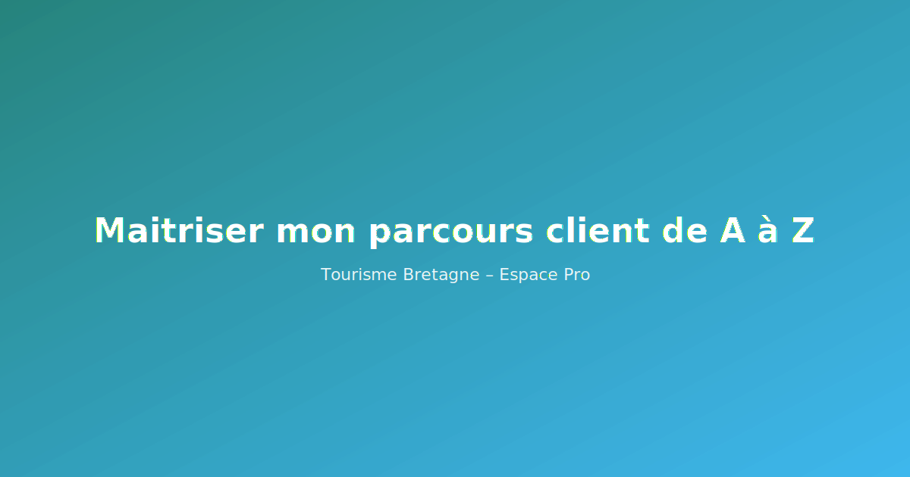

Maitriser mon parcours client de A à Z
Piloter l’expérience client de bout en bout et valoriser la qualité d’accueil.
Objectifs
- Cartographier le parcours client
- Élever les standards d’accueil
- Industrialiser les retours d’expérience

Au programme
- Introduction & contexte
- Boîte à outils et bonnes pratiques
- Checklist et suivi